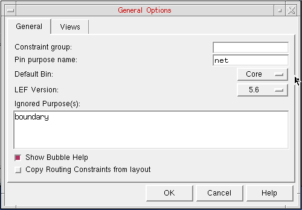
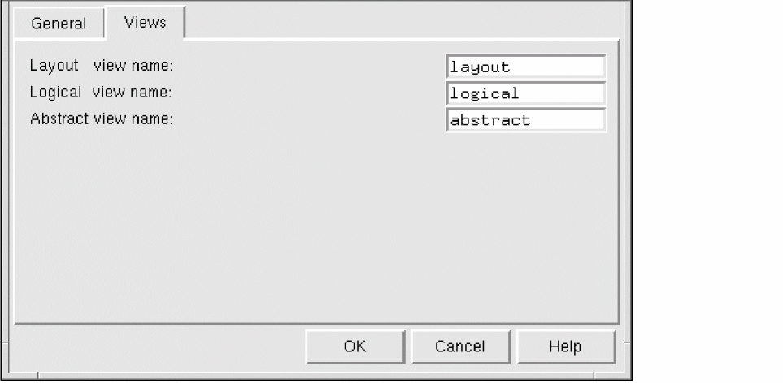

Specifying Global Options in General Options form
The General Options form lets you view and change options that apply to the overall Abstract Generator. The options are split into different categories, accessed using the Views and General tabs in the General Options form.
-
Choose File – General Options command.
The General tab provides the options to set the default bin, LEF version, and the purpose name(s) to be ignored during the flow steps.
- Select Constraint group to specify the name of the constraint group of the technology database.
-
Select Pin purpose name to set the purpose for pins on the final abstracts. The default purpose is
net. - Select Default Bin to specify the default bin into which library cells are imported.
-
Select LEF Version to set the version of LEF to be used by Abstract Generator. You can select from
5.4,5.5,5.6,5.7. The default version of LEF used by Abstract Generator is5.7for mature nodes and5.8for advanced nodes. - Select Ignored Purpose(s) to specify the purpose name(s) that you want to be ignored when a layer name without a qualifying purpose name is specified for the Pin, Extract, and Abstract steps.
- Select Show Bubble Help to display bubble help for various GUI options. It is selected by default. You can turn it off if required.
- Select Copy Routing Constraints from layout to enable Abstract Generator to copy the mixed signal routing constraints from the layout view to the abstract view.
-
In the Views tab, you can specify the file names that Abstract Generator would use while creating layout, logical, and abstract database files. The Logical file name field can also be used to specify an existing logical view (for example,
schematicorsymbol) from which logical information is to be picked up.
- Select Layout View Name to specify the view name for layout information. For example, if you import GDSII layout data into Abstract Generator, this is the name used for the database files that are generated.
- Select Logical View Name to specify the view name for logical information.
- Select Abstract view name to specify the name used for the abstract views created by Abstract Generator.
- Click OK.
Related Topics
Return to top